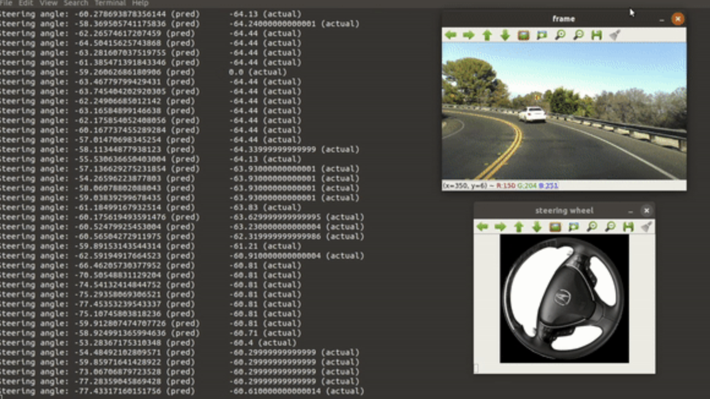
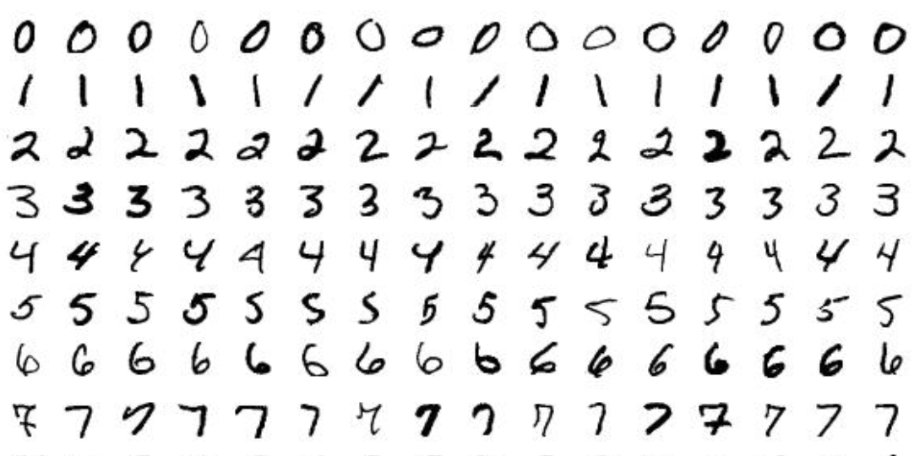
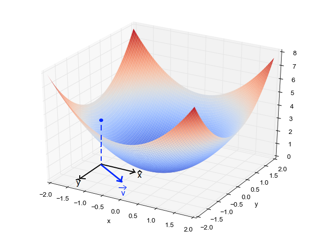
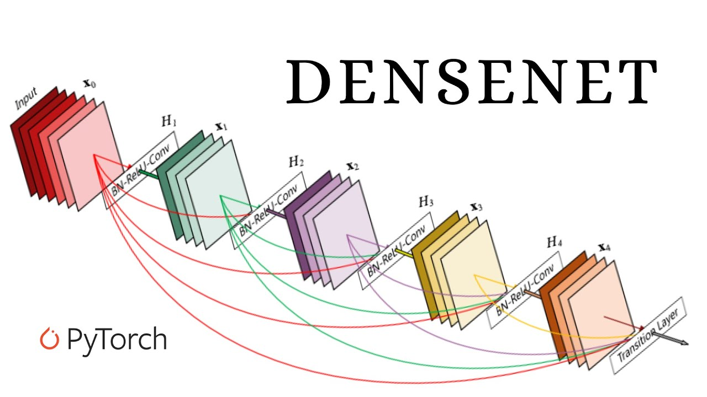

This project involves predicting the steering angle of a self-driving car using CNN based on NVIDIA’s architecture. The dataset consists of front-view images, preprocessed and fed into a model with convolutional layers. The model is trained using the Adam optimizer, with dropout and L2 regularization to improve performance, aiming to minimize the mean squared error

This project builds an apparel recommendation system using Amazon product data, applying machine learning techniques to analyze product features and suggest similar apparel items based on user preferences.
Amazon Data
NLP
Python
TF-IDF
Cosine Similarity
Recommendation System
This project focuses on classifying genetic mutations using clinical text data, aiming to predict the category of each mutation by applying advanced machine learning models to analyze patterns in the data.
SGD Classifier
Random Forest
Naive Bayes
TF-IDF
Bag of Words
One-Hot Encoding
Exploratory Data Analysis
Data Preprocessing
Feature Engineering

This project uses a Convolutional Neural Network (CNN) to classify handwritten digits from the MNIST dataset, applying deep learning techniques to achieve high accuracy in digit recognition tasks.
CNN
MNIST Dataset
Dropout
Batch Normalization
Python
Keras

This project applies Stochastic Gradient Descent (SGD) for linear regression on the Boston housing dataset, comparing a custom SGD implementation with Scikit-learn’s SGD Regressor and Linear Regression models to evaluate model performance.
SGD Regressor
Linear Regression
Custom SGD Implementation
Boston Housing Dataset
Feature Scaling
Python
Scikit-learn
Matplotlib
Seaborn
This project clusters classroom project proposals from DonorsChoose.org to predict approval likelihood, using clustering algorithms such as K-Means, Agglomerative Clustering, and DBSCAN, along with feature engineering techniques.
K-Means Clustering
Agglomerative Clustering
DBSCAN
Feature Engineering
Word Cloud
Python
Scikit-learn
Pandas

This project implements a DenseNet Convolutional Neural Network (CNN) to classify images from the CIFAR-10 dataset, leveraging techniques such as batch normalization, data augmentation, and Adam optimizer to improve model performance.
DenseNet
CIFAR-10 Dataset
Batch Normalization
Data Augmentation
Adam Optimizer
Python
TensorFlow
Keras